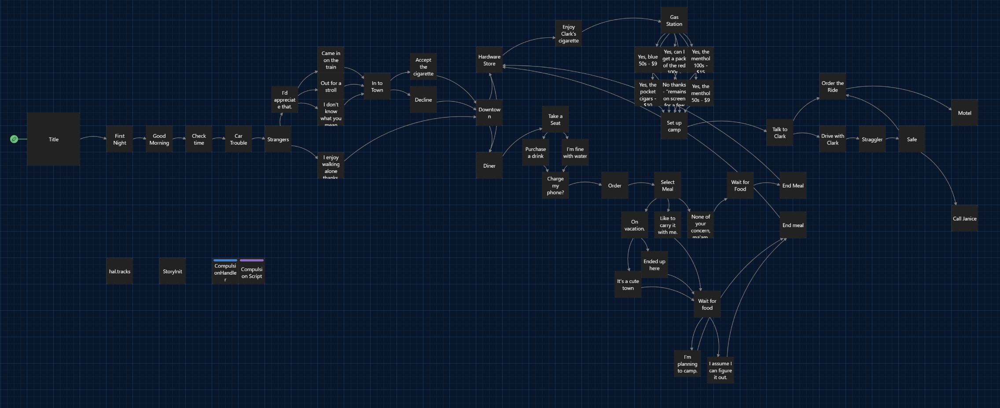

Railways
Interactive narrative design and story writing.
- Type
- Solo
- Engine
- Twine
- Languages
- Twine Harlowe
- Duration
- 3 months
- My role
- interactive narrative designer, writer
The goal
Use Twine to practice interactive narrative design. From design documents to a functional game with interesting characters, dialogue, and a cohesive plot.
Pitch
A choose-your-own-adventure game where you play as a young man who hops trains across the country and interacts with a diverse cast of characters. The full design has you managing money and addictions to survive the world and your deteriorating mental state.
What it shows
I planned the story in a beat sheet covering act structure and each character's wants, then built it in Twine. As well, implemented an additional gameplay mechanic: the compulsion meter. With full functionality, it would directly influence the player’s choices in game.
- Planning: A beat sheet written before any passage.
- Writing: A branching story of about 3,100 words across 53 passages, with a cast of distinct characters.
- Presentation: A handwritten typeface and supporting audio effects mixed in Ableton Live. I also created a bar that tracks the player’s compulsion, simulating their addictive personality. This bar does not have influence on player choice yet.
// increases compulsion by 5 each passage and prints to screen
(set: $compulsion to (min: 100, it + 5))
(print: "
<div id='compulsion-wrap'><label>Compulsion</label>
<div id='compulsion-bar'>
<div id='compulsion-fill' style='width:" + (str: $compulsion) + "%'>
</div>
</div>
</div>")
What I would change
The first act is laid out. When I return to polish it. I want to finish the final events with dialogue. Get the compulsion meter influencing player decisions, and add functional money and inventory. I would also add hand-drawn art and more audio. This will complete the first section of the story and be a stronger prototype.
